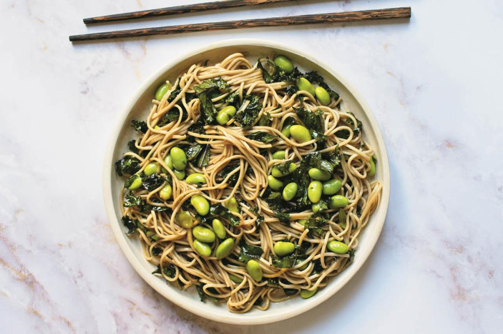

Sesame Soba Noodles

Description
Soba noodles are quick to cook and they work well at room temperature, making them a natural choice for
a quick or make-ahead vegan lunch. You could even whip up this dish before leaving the house, as it comes
together in one pot in under 10 minutes. Although it includes only a few ingredients, it is very flavourful
— soy sauce and sesame oil bring so much to the table.
Ingredients
- 6 oz soba noodles
- 1 cup frozen shelled edamame
- ¼ cup soy sauce
- 1 ½ Tbsp sesame oil
- 1 tsp sriracha or other chili-garlic hot sauce (optional)
- 2 cups finely chopped kale
Steps
- Boil the noodles and edamame together until both are tender, about 4 minutes (double check your packages to make sure this is the correct cooking time, as there may be some variation). Drain and rinse under warm water to prevent clumping.
- Toss the cooked noodles and edamame with soy sauce, sesame oil, hot sauce (if using) and kale. Taste and adjust the flavours. Serve.
Go to top of page
Go back to Glossary